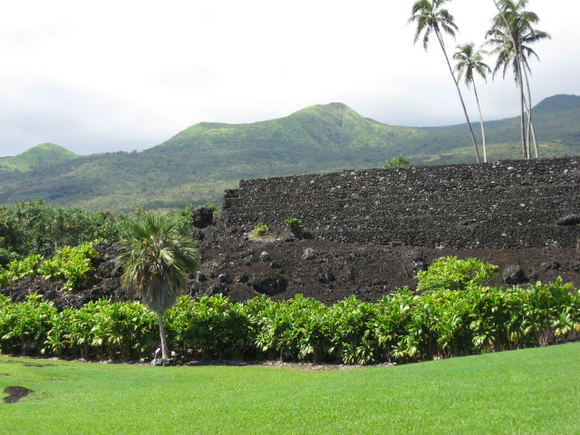

1. Kahanu National Tropical Botanical Gardens
Located on the Hāna coast, along the eastern shores of Maui. Plant collections from the Pacific Islands.
650 Ulaino Road
Hana, Maui, HI
Telephone 808-248-8912

2. Maui Nui Botanical Gardens
The mission of the Maui Nui Botanical Gardens is to foster an appreciation and understanding of the living Hawaiian islands of today. Collection of native Hawaiian coastal and dry forest plants.
150 Kanaloa Ave.
Kahului, HI 96732
Telephone: (808) 249-2798
Fax: (808) 249-0325
Email: .(JavaScript must be enabled to view this email address)

Photo credit Kaydee Park
Photo credit Kaydee Park